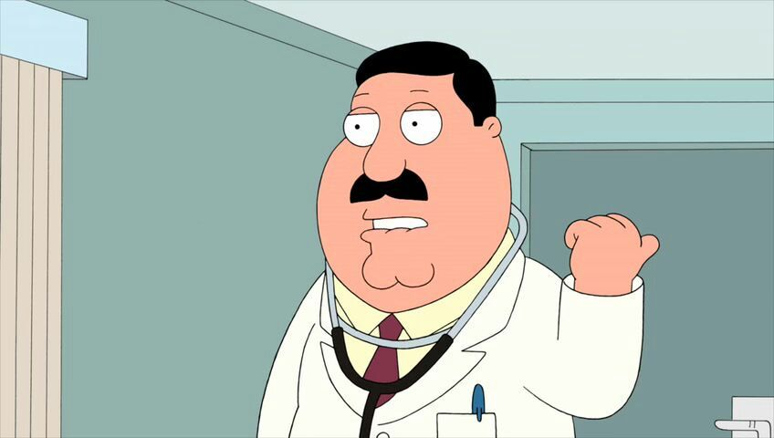

Dr.Elmer Hartman

Dr.Hartman in one of the episodes
Dr. Elmer Hartman is the Griffin Family's doctor, despite displaying a high level of incompetence in most episodes. He has a nephew and a cousin named Marshall. He was named after Seth MacFarlane's good friend and fellow animator, Butch Hartman. Dr. Hartman,
Carter Pewterschmidt, and Seamus' voices are nearly identical, which has been mentioned several times on the DVD audio commentaries. The similarity is shown and discussed in "Believe It or Not, Joe's Walking on Air" and a DVD-exclusive scene
in The Shawshank Redemption segment of "Three Kings".
Tribute Link